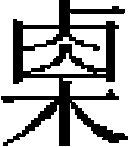
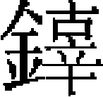

太宗
太宗英文皇帝，諱窩闊台，太祖第三子也。母曰光獻翼聖皇后。太祖長子朮赤，次察合台，二人素不相能。太祖十四年，親征西域，議立嗣而行，察合台請以帝爲嗣，太祖從之，事具《朮赤傳》。十六年，朮赤、察合台攻烏爾鞬赤，屢失利，太祖改命帝爲統帥。帝調和兩兄，兵復振，遂克烏爾鞬赤。十七年春，帝略地印度河下游，請進攻昔義斯單，太祖召帝還，與察合台等從太祖班師。二十一年，從太祖伐西夏。太祖崩，皇弟拖雷監國，帝分地在葉密爾河，留於霍博之地，安輯部衆。
元年己丑夏，帝至忽魯班雪不只之地，皇弟拖雷來迎。
秋八月己未，諸王百官會於怯緑連河闊迭額阿剌勒，請帝遵太祖遺詔即位，共上尊號曰木亦堅合罕。皇兄察合台持帝右手，皇叔斡赤斤持帝左手，皇弟拖雷以金杯進酒贊。帝東向拜日，察合台率皇族及群臣拜於帳下。
先是，太祖崩，金主遣其知開封府完顔麻斤來弔。至是，復遣其御史大夫完顔訥申來歸太祖之賵。帝曰：「汝主久不降，使先帝勞於兵間，朕豈忘耶？何以賵爲！」卻之。
敕宿衛等依前番直，宣太祖聖訓以諭之。始建倉廪，立馹傳。蒙古人有馬百者，輸牝馬一；牛百者，輸 牛一；羊百者，輸羒羊一。著爲令。中原人以户計出賦調，命耶律楚材主之。西域人以丁計出賦調，命麻合没的牙剌瓦赤主之。凡諸王、駙馬朝會，及使者往來，不得科斂百姓。
牛一；羊百者，輸羒羊一。著爲令。中原人以户計出賦調，命耶律楚材主之。西域人以丁計出賦調，命麻合没的牙剌瓦赤主之。凡諸王、駙馬朝會，及使者往來，不得科斂百姓。
冬十一月，勅諸王、衆官人管轄之地，僉軍事理有妄分彼此者，罷其達魯花赤以下等官。
是年，始立三萬户，以劉黑馬、粘合重山、史天澤爲之。賜撒吉思不花金符，安輯山東、河北諸州。木剌夷國王來朝。西域伊思八剌納酋内附。
二年庚寅春正月，詔自元年以前事勿問。定諸路課税、酒課，驗實息十取一，雜税三十取一。帝與拖雷獵於斡兒寒河。
夏四月，帝避暑於塔密兒河。朵豁勒圍慶陽，與金將完顔彝等戰於大昌原，失利。東平行省嚴實入覲。帝遣斡骨欒使於金，北還，金陝西左副元帥盧鼓椎見使者，有不遜語。帝聞之，大怒。
六月，金主復遣完顔奴申來聘，帝不受。
秋七月，帝自將伐金，命斡赤斤留守，皇弟拖雷及其子蒙哥皆從。
八月，史天澤克衛州。
冬十月，遣速哥使於金。
十一月，始置十路徵收課税使。以陳時可、趙昉使燕京，劉中、劉桓使宣德，周立和、王貞使西京，吕振、劉子振使太原，楊簡、高廷英使平陽，王晉、賈從使真定，張瑜、王鋭使東平，王德亨、侯顯使北京，夾谷永、程泰使平州，田木西、李天翼使濟南。大兵攻潼關、藍田關，俱不克。
十二月，大兵拔天勝寨及韓城、蒲阪。帝至平陽，以田野不治，問都總管李守賢。對曰：「貧民無耕具，故荒田多。」詔給牛萬頭，仍徙關中户口，墾河東荒地。
是年，改乾寧軍爲清寧軍，復改隆德府爲潞州。遣李邦瑞使於宋，至寶應縣不得入。詔行省李全護送邦瑞，宋邊將又拒之。乃改道出於蘄、黄，與宋行人定約而還。遣綽兒馬罕率精兵三萬，討札剌勒丁，戰於合而拉耳之地，大敗之。
三年辛卯春正月，李全攻揚州，爲宋將趙葵所殺。
二月，大兵克鳳翔府，分兵攻宋西和州，獲其將强俊。金平涼、慶陽、邠原等府州皆降。速不台與金將完顔彝戰於倒回谷，失利。
夏五月，帝避暑於九十九泉，以李全妻楊妙真爲山東淮南行省。金降人李國昌言於拖雷，請出寶雞，自漢中達於唐、鄧，從之。遣搠不罕使於宋，假道且請會兵。搠不罕至沔州，宋青野原統制張宣殺之。
秋八月，帝幸西京，始立中書省，改侍從官名。以耶律楚材爲中書令，粘合重山爲左丞相，鎮海爲右丞相。耶律楚材奏請州縣長吏專理民事，萬户府專理軍政，課税所專理錢穀，各不相統攝。從之。拖雷入大散關，拔宋鳳州、洋州，進圍興元。分軍爲二：西軍由沔州渡嘉陵江，東軍趨饒風關，略地而東。初，皇叔斡赤斤遣著古與等使於高麗，高麗人殺之。至是，帝命撒里塔征高麗，討其殺使者之罪。
九月，帝自將圍河中府。命平陽移粟西京，都總管李守賢言：「百姓疲敝，不任輸載。」詔罷之。
冬十二月己未，克河中府。戊辰，拖雷渡漢水，與金將布哈戰於禹山，布哈引兵還，邀其輜重，獲之。撒里塔圍高麗東京，高麗王 請降。是年，大名守將蘇椿反，命楊傑只哥討斬之。綽兒馬罕追札拉勒丁至庫兒忒山，札拉勒丁敗死。貨勒自彌亡。綽兒馬罕遂取阿尼忒、愛而西楞、梅法而司三部之地。
請降。是年，大名守將蘇椿反，命楊傑只哥討斬之。綽兒馬罕追札拉勒丁至庫兒忒山，札拉勒丁敗死。貨勒自彌亡。綽兒馬罕遂取阿尼忒、愛而西楞、梅法而司三部之地。
四年壬辰春正月壬午朔，拖雷敗金將完顔兩婁室於襄城。丙戌，帝自河清縣白坡渡河，三日軍畢渡。庚寅，拖雷使者至，奏已渡漢江。詔諸軍即日進發。甲午，帝至鄭州，金屯軍元帥馬伯堅以城降。丙申，大雪。丁酉，帝至新鄭縣。是日，拖雷及金兵戰於鈞州之三峰山，大敗之，獲其大將布哈。自是，金兵不能復振。戊戌，帝至三峰山。壬寅，克鈞州，獲金大將合達及完顔彝等。辛丑，金潼關守將李平以城降。庚戌，金許州兵以城降。是月，撒里塔自高麗班師。帝遣使以璽書諭高麗王。
二月戊午，帝至盧氏縣，遇金將徒單兀典等，金兵不戰而潰。完顔重喜來降，帝命斬重喜於馬前。遂下商、虢、嵩、汝、陝等州。乙丑，分兵攻歸德府，許、鄭、陳、亳、壽、潁、睢、永等州進。
三月丁亥，克中京，金將强伸復取之。命速不台等圍南京。宋人以兵來會。遣使諭金主降。壬寅，金主使其諫議大夫裴滿阿虎帶、大府監國世榮來乞和，以其弟之子曹王譌可爲質。癸卯，速不台攻南京，不克。
夏四月丁巳，金主復使其户部侍郎楊仁奉金帛乞和，速不台以城不易下，許之。戊午，金主又使仁賫珍寶來謝。己未，遣没忒入城詔諭金主。是月，車駕北還，留速不台圍南京。帝由半渡至真定府。幸中都，出居庸關，避暑於官山。高麗國遣使來貢方物。
五月，勅使臣無牌面文字，始給馬之縣官及元差官皆罪之。若兵事及送御用物，仍驗數應付車牛。帝不豫。
六月，疾甚。拖雷禱於天地，請以身代之。未幾，帝疾瘳。遣金質子曹王譌可歸。高麗復叛，徙都於江華島。
七月，遣唐慶諭金主降。甲申，金人殺唐慶及從者三十餘人。乙酉，國安用叛附於金。
八月辛亥，速不台敗金將武仙等於京水。復遣撒里塔征高麗。
九月，帝次阿剌合的思之地。皇弟拖雷卒。
冬十月，高麗國遣使來謝罪。
十一月，帝獵於納蘭赤剌温之地。
十二月，駐蹕於太祖大斡爾朵。金主以汴京不能守，議渡河取衛州。撒里塔攻高麗處仁城，中流矢卒，别將鐵哥引兵還。
是年，立彰德路總元帥府，改懷州爲行懷孟州事。遣王檝使於宋，議夾攻金人。宋使鄒伸之來報命。帝許以成功之後，歸宋河南地。
五年癸巳春正月丙午朔，金主渡河。辛亥，金將白撒攻衛州。丁巳，撤吉思不花等敗白撒於白公廟。金主奔歸德府。戊辰，金京城西面元帥崔立殺留守完顔奴申等，以南京降。
二月，帝幸鐵列都之地。命皇子貴由及諸王按赤帶將左翼兵，討蒲鮮萬奴。
夏四月癸巳，崔立以金太后王氏、皇后徒單氏、梁王從恪、荆王守純，及宗室男女五百餘人，至速不台軍中。甲午，速不台殺從恪、守純，送王氏、徒單氏赴行在。忒木 率諸軍圍歸德。
率諸軍圍歸德。
五月，金將蒲察官奴乘夜來攻，撒吉思不花及都元帥董俊等皆戰没。詔諭高麗王悔過來朝，且數其五罪。
六月壬午，速不台克中京，獲金中京留守强伸。辛卯，金主自歸德奔蔡州。己亥，金主入於蔡州。是月，帝命以孔子五十一世孫元措襲封衍聖公。
秋八月，帝獵於兀必思之地。以阿同葛等充宣差勘事官，括中州民户。
九月，遣王檝使於宋，且徵糧。辛亥，塔察兒築長圍以困蔡州。是月，皇子貴由等獲萬奴，遼東平。
冬十月甲申，金將麻琮以徐州降。高麗人畢賢甫與洪福源殺高麗宣諭使鄭毅，以西京降。高麗將崔瑀攻賢甫斬之，福源來奔。
十一月，宋遣其都統制孟珙等來會師，并輸糧三十萬石。
十二月己卯，拔蔡州外城。己丑，拔其西城。
是冬，帝幸阿魯兀忽可吾行宫。敕修孔子廟及渾天儀。趙揚據興州叛，易州達魯花赤趙瑨討斬之。金海、沂、萊、濰等州降。
六年甲午春正月戊申，金主傳位于宗室子承麟。己酉，大兵克蔡州，金主自縊死，承麟爲亂兵所殺，金亡。金息州行省抹撚兀典降於宋，大兵追殺之。
是春，會諸王於斡兒寒河。
夏五月，金將武仙奔澤州，爲戍兵所殺。帝幸答蘭答八思之地，大會諸王百官，頒大札薩克以令於衆曰：
凡當會不赴而私宴者，斬。諸出入宫禁，各有從者，男女止限十人，出入毋得相雜。軍中凡十人置甲長一，聽其指揮，專擅者罪之。其甲長以事來宫中，置權攝一人、甲外一人，二人不得擅自往來，違者罪之。諸公事非當言而言者，拳其耳；再犯，笞；三犯，杖；四犯，論死。諸千户越萬户前行者，以木鏃射之。百户、甲長、諸軍有犯，其罪同。諸軍甲内數不足，於近翼抽補足之。諸人或居室，或在軍中，毋敢喧呼。凡來會，用善馬五十匹爲一羈，守者五人，飼羸馬三人，守乞烈思三人。但盜馬一二者，即論死。諸人馬不應絆於乞烈思内者，輒没與畜虎豹人。諸婦人製質孫燕服不如法者，及妬者，乘以驏牛狥部中，論罪，即斂財爲更娶。
六月，宋將全子才率萬餘人自合肥趨汴京。崔立爲部將李伯淵等所殺。
七月，子才入汴。己卯，宋制置使趙葵陷泗州。乙酉，宋監軍徐敏子入洛陽，都元帥塔察兒拒戰於龍門北，大敗之。以忽都虎爲中州斷事官，野里朮副之。遣大達海紺卜伐宋，取四川諸路。
八月，宋將全子才等以糧盡，引還。帝幸答八思之地，議自將伐宋，國王查剌請行，允之。
冬十二月己卯，遣王檝使於宋，責宋人敗盟。宋遣鄒伸之、李復禮等來報謝。帝獵於斡兒寒河。
是年，東平行省嚴實入覲，授實東平路行軍萬户，偏裨賜金符者八人。改威州爲邢洺路。設國子監助教官於燕京，令大臣子弟入學。
七年乙未春，城和林，作萬安宫。初，太祖居怯緑連河，又徙於盧朐河。帝即位，亦居怯緑連河及盧朐河，至是始建都於和林，國語曰喀剌科魯木。春，帝居萬安宫一月，居揭揭察哈殿二月。夏，避暑於昔剌斡兒朵。秋，居於闊闊腦兒行宫。冬，大獵於汪吉河。四時臨幸，率以爲常。帝以欽察、斡羅斯部未定，命諸王拔都、大將速不台討之，皇子貴由、合丹，皇弟闊列堅及諸王鄂爾達、昔班、唐古忒、貝達爾、不里、蒙哥、撥綽皆從行。帝諭拔都曰：「聞欽察别部酋八赤蠻有膽勇，速不台可勝之。」又以金秦、鞏二十餘州固守不降，命皇子闊端招諭之。又命皇子曲出、大將忽都虎伐宋，諸王唐古伐高麗。
秋七月，諸王口温不花略唐州，宋將全子才、劉子澄等皆遁。僉宣德、西京、平陽、太原、陝西五路人匠充軍，每二十户僉一人。
冬十月，曲出拔棗陽及光化軍。
十一月，略襄、鄧諸州，敗宋制置使趙范於郢州之上閘口。再戰，大兵失利，遂引還。闊端至鞏昌，承制授金便宜總帥汪世顯原官。初，大兵克蔡州，世顯即殺金行省粘葛，至是以鞏昌來降，從闊端伐宋。
十二月，闊端克沔州，唐古克高麗鳳、海、洞、慈及金山、歸信等州。中書省臣請契勘《大明曆》，從之。
是年，置大興府版籍。改濟寧府爲山東路總管府，濟州改隸東平府。安次縣改隸霸州，林州改行縣事。
八年丙申春正月，萬安宫成，諸王來會宴，帝手觴賜中書令耶律楚材曰：「朕所以推誠委卿者，先帝之命也。非卿則中原無今日，朕之安枕，皆卿力也。」詔印造交鈔行之，不得過萬錠。
二月，命應州萬户郭勝、鈞州萬户孛朮魯久住、鄧州萬户趙祥從皇子曲出伐宋。
三月，復修孔子廟及司天臺。宋王旻、李伯淵等以襄陽降，命游顯守之。
夏四月，曲出克隨、郢二州及荆門軍。復詔忽都虎括中原户口，得一百一十餘萬，定税每户出絲一斤，以供官用，五户出絲一斤，以賜貴戚、功臣。上田畝税三升半，中田三升，下田二升半，水田畝五升。商税三十分之一。鹽價銀一兩四十斤，以爲永額。
六月，立編修所於燕京，經籍所於平陽，編集經史，以梁陟充長官，王萬慶、趙著副之。
秋七月，詔燕京路民户及真定路新籍户，每二十户僉軍一人，以答不也兒領之。命陳時可閲刑名、科差、課税等案，赴和林照磨。詔以真定民户奉太后湯沐。諸王、貴戚、斡魯朵：拔都，平陽府；茶合帶，太原府；皇子古與克，大名府；孛魯台，邢州；果魯干，河間府；孛魯古帶，廣寧府；也苦，益都、濟南二府户内撥賜；按赤帶，濱、棣二州；斡陳，平涼州；皇子闊端、駙馬赤古、公主阿剌海、公主果真、國王查剌、茶合帶、鍜真、蒙古寒札、按只那顔、折那顔、火斜、朮思，並於東平府户内撥賜有差。耶律楚材言其不便，乃命設達魯花赤，朝廷别置官吏收其租賜之，非奉詔不得徵調兵賦。
八月，大兵克棗陽軍及德安府。
九月，闊端攻武休關，入興元，敗宋兵於陽平關，斬其將楊雲、曹友聞。時金秦、鞏二十餘州皆降，惟會州都總管郭蝦䗫堅守不下。
冬十月，按竺邇克會州，郭蝦䗫自焚死。丙午，闊端拔文州。按竺邇招撫吐番諸部，略定龍州，與闊端合兵攻成都府，克之。會皇子曲出卒，闊端遂班師。
十一月，口温不花遣察帶圍真州，不克。
十二月，中書省課績，以知濟南府張榮爲第一。
是年，改滏陽軍爲邢洺路，置邢總管府。升涿州路。速不台討布而嘎而部，平之。
九年丁酉春，帝獵於揭揭察哈澤。蒙哥等獲欽察别部酋八赤蠻，斬之。波爾塔斯、毛而杜因、薩克孫三部來降，裏海以北悉定。
夏四月，築埽隣城，作揭揭察哈殿。
六月，皇叔斡赤斤所部譌言括民女，帝怒，因括之以賜將士，自七歲以上未嫁之女得四千餘人。
秋八月，命斷事官朮虎乃、山西中路課税所長官劉中試諸路儒士，中選者蠲其賦役，令與本處長官同署公事，得東平楊奂等四千三十人。
冬十月，獵於野馬川，駐蹕行宫。口温不花等克光州，進拔復州。攻蘄州，宋知州徐

固守，攻安豐軍，宋知軍杜杲固守，俱不下，遂引還。是年，拔都等入斡羅斯，克其勒冶贊城，進拔克羅姆訥城，皇弟闊列堅中流矢卒，遂圍物拉的迷爾都城。
十年戊戌春，國王塔斯伐宋，入北峽關，宋將汪統制降。拔都等克物拉的迷爾城，分兵拔廓在爾斯科城。
二月，遣王檝使於宋。
三月己丑，宋通好使周次説來報謝。
夏四月，築圖蘇湖城，作迎駕殿。襄陽裨將劉義執游顯等，降於宋，宋復取襄樊。
六月，中書令耶律楚材陳時務十策，曰信賞罰，正名分，給俸禄，官功臣，考殿最，均科差，選工匠，務農桑，定土貢，制漕運。帝悉行之。
秋八月，徵收課税使陳時可、高慶良奏諸路旱蝗，詔免今年田租，仍停舊未輸納者。以察罕爲馬步軍都元帥。察罕克天長縣及滁、泗等州。
九月，察罕圍盧州，宋知州杜杲拒戰，兵失利，引還。
冬十月辛未，宋人取光州。楊惟中建太極書院於燕京。
十一月，衍聖公孔元措奏禮樂散失，亡金太常官吏及禮册、樂器尚存者，請降旨收録。從之。
十二月，高麗國遣使貢方物。
是年，改平州爲興平府，立鼓城等處軍民萬户府。改深州隸真定路。塔海克隆慶府。宋洋州守將以城降。綽兒馬罕再入義拉克阿剌伯，敗哈里發於侃匿斤城，分兵取角兒只屬部之地。
十一年己亥春正月，富民劉廷玉等請以銀一百四十萬撲買中原課税，中書令耶律楚材奏罷之。宋孟珙復取信陽軍，尋又取光化軍及息、蔡二州。
是春，獵於揭揭察哈澤，皇子闊端至自西川。
夏四月，賜高麗王王璽書，徵其入朝。
六月，高麗國遣使奉表謝罪。塔海攻重慶府，不克。
秋七月，以山東諸路災，免其田租。
冬十一月，蒙哥等圍阿速部蔑怯思城。
十二月，塔海與宋兵戰於歸州大堊砦，失利。宋復取夔州。西域賈人奥都拉合蠻撲買中原銀課二萬二千錠，以四萬四千錠爲額，從之。初，奥都拉合蠻，窶人也。國法：春、夏浴水中者死。帝與皇兄察合台出獵，見奥都拉合蠻浴，察合台欲斬之。帝曰：「彼遺金没而求之，非浴也。」乃免死，令給事左右。後日見親信，遂恣爲奸利焉。
是年，金降將王榮執懷州達魯花赤純只海以叛。純只海妻善禮伯倫奪純只海歸，討榮，誅之。升順天軍爲路，置總管府，以易州、祁州、定州及雄州之三縣屬之。立太原路總管府。綽兒馬罕分兵攻角兒只諸部，角兒只大將阿拔克迎降。
十二年庚子春正月，以奥都拉合蠻充提領諸路課税所官。蒙哥等克蔑怯思城。拔都以斡羅斯諸部悉定，遣使來奏捷。命萬户張柔等分道伐宋。
二月，按竺邇敗宋舟師於夔門。
夏四月，始令製登歌樂，肄習於曲阜孔子廟。遣王檝使於宋。未幾，檝以疾卒，宋人歸其喪。
秋八月，宋將余玠以舟師入寇，泝河抵南京而返。
冬十二月，詔皇子貴由班師。敕州縣失盜不獲者，以官物償之。
是年，敕代償官民借回鶻金，計子母七萬六千錠。仍敕凡借貸歲久者，惟子本相侔而止，著爲令。籍諸王大臣所俘男女，放爲良民。以曷思麥里爲懷孟、河南二十八處都達魯花赤。東平行軍萬户嚴實卒。角兒只將阿拔克及凱辣脱酋阿釋阿甫妻湯姆塔入朝，帝厚撫之，詔綽兒馬罕盡返角兒只侵地，又諭角兒只歲貢外，不得任意苛斂。
十三年辛丑春正月，獵於揭揭察哈澤。辛酉，帝疾甚，醫言脈絶。耶律楚材請大赦天下，從之，異日而瘳。
三月，都總管萬户劉嶷入覲，命嶷巡撫天下，察百姓利病。以劉敏行省事於燕京，賜敏手詔曰：「卿之所行，有司不得與聞。」拔都等敗波蘭兵於勒基逆赤城。
夏四月，高麗王以族子綧入質。
冬十月，以牙剌瓦赤同行省劉敏主管燕京公事。未幾，牙剌瓦赤以流言誣敏，敏出手詔示之。帝聞之，按問得實，罷牙剌瓦赤。
十一月丁亥，帝出獵，耶律楚材諫，不聽。庚寅，還至鈋鐵

胡蘭山，奥都剌合蠻進酒，帝飲醉。辛卯遲明，崩於行宫，年五十六。葬起輦谷。至元三年冬十月，追諡英文皇帝，廟號太宗。初，帝愛拖雷子蒙哥。一日，召蒙哥，撫其首曰：「是可以君天下。」異日，帝用豹，皇孫失烈門在側曰：「用豹，則犢將安養？」帝又曰：「是有仁心，可以君天下。」及帝崩，六皇后乃馬真氏召耶律楚材問立君，楚材對曰：「此非外臣所敢與者。」后乃與諸王定議立皇子貴由爲嗣。皇后臨朝稱制，以俟拔都等之至焉。
壬寅春，皇后乃馬真氏稱制元年，拔都等班師返。
夏五月，大兵攻宋遂寧、廬州，克之。
秋七月，張柔自五河口渡淮，攻揚、滁、和諸州，敗宋統制王温等於天長縣。
冬十月，張柔克通州。
十二月，大兵攻叙州，獲宋都統制楊大全。是年，右丞相鎮海罷。
癸卯春正月，高麗國遣使來貢方物。
三月，大兵克資州。汪世顯卒，以其子德臣代之。
夏五月，熒惑犯房星。耶律楚材奏：「當有驚擾，然終無事。」未幾，皇叔斡赤斤引兵趨和林，皇后欲西遷以避之。楚材曰：「臣觀天道，無他變也。」已而果如其言。
秋，察罕奏以張柔總諸軍，屯杞縣。
是年，貝住征羅馬國，分兵入西里亞，羅馬酋開廓蘇降。
甲辰春，諸王大會於也只里河。
夏五月，中書令耶律楚材卒。察罕圍宋壽春府，不克。宋壽春兵從海道寇膠、密諸州。至是，大兵突至，樹栅以遏援師。宋將劉雄飛堅守，不下。
冬十月，高麗國遣使奉表來覲。
是年，併岢嵐、寧化、樓煩三縣入管州。
乙巳秋，察罕率步騎三萬，與張柔再攻壽春，進至揚州，宋制置使趙葵請和，乃班師。
九月，宋裨將劉整陷鎮平縣。
是年，貝住克凱辣脱城，遵太宗遺命，以其地與湯姆塔。
史臣曰：太宗寬平仁恕，有人君之量。常謂即位之後，有四功四過：「滅金，立站赤，設諸路探馬赤，無水處使百姓鑿井，朕之四功；飲酒，括叔父斡赤斤部女子，築圍牆妨兄弟之射獵，以私憾殺功臣朵豁勒，朕之四過也。」然信任奥都拉合蠻，始終不悟其奸，尤爲帝知人之累云。
本章完!